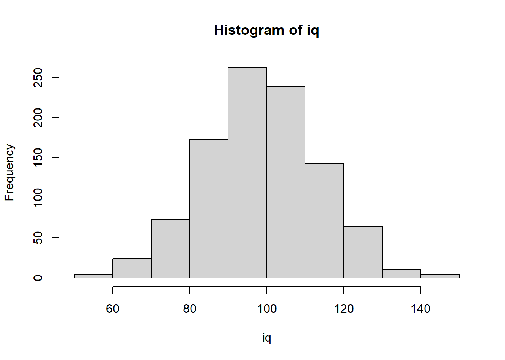

numeric_vector <- c(23, 22, 35)Vectors and data frame basics
Under construction.
This page is a work in progress and may contain areas that need more detail or that required syntactical, grammatical, and typographical changes. If you find some part requiring some editing, please let me know so I can fix it for you.
Overview
In this module, we will address some basic building blocks of data frames in R. Having a basic understanding of objects, we can extend that to experience to some of the most important objects to understand when working with data, vectors and data frames. We will cover different examples of vector objects, their elements, and how they are organized into larger objects like data frames. Many functions we will use to clean and wrangle data will involve understanding and recognizing these two different object types so that you can apply a function correctly. For example, if a function accepts a vector in order to modify it, you cannot pass a data frame to it. You cannot try to brute force this approach and if you do, you will forever be frustrated. So, let’s jump deeper into some basic concepts.
Note: By design, concepts in modules will often be redundant with concepts in other modules. If you understand the concepts, just read along or skip through the content. The redundancy, however, is built in purposefully to provide additional scaffolding to those who need it and because droves or literature on cognition and memory support the importance of repetition.
Readings and Preparation
Before Class: First, read to familiarize yourself with the concepts rather than master them. I will assume that you attend class with some level of basic understanding of concepts and working of functions. The goal of reading should be to understand and implement code functions as well as support your understanding and help your troubleshooting of problems. This cannot happen if you just read the content without interacting with it, however reading is absolutely essential to being successful during class time.
Class: In class, some functions and concepts will be introduced and we will practice implementing code through exercises.
Libraries
- {here} 1.0.1: for file path management
To Do
Read through the module. You can use the R console or open up an R Markdown (e.g., .Rmd) file to follow along interactively. If you instead prefer to simply read through the content so that you can understand the concepts without coding, that is fine too. Concepts will be applied in class in order to complete activities, however. Reading the module will provide you with confidence working on those activities and prevent you from feeling lost while completing activities. Testing out some code may provide you more confidence.
Variables/Vectors are Uni-dimensional
Objects can take on different characteristics. For example, some objects may represent a single value (e.g., a numeric values or a string), some may represent multiple values like a variable or levels of a variable, some may be lists, etc.
In R, the simplest type of data structure is known as a vector. A vector is basically a sequence of data elements of the same basic type (e.g., numeric, character, etc.). The values of a vector, whether numeric or non-numeric, are called elements or components. One way to conceptualize a vector is that it’s an object holding values of a variable. For example, you might have variables representing ages of all your participants, reaction times corresponding to response to stimuli, salaries of people in your company, education levels of employees, or IQs of individuals. In many instances, you may have variables that exist as part of a data file whereas in other instances, you may need to to create them with code. Let’s create some vectors to understand their structure.
Combining elements into vectors using c()
One way to create vectors is by using the combine function, c(). You can combine numeric and character elements into a vector. Let’s create some examples and assign names to them.
Numeric vector:
Call the object:
numeric_vector[1] 23 22 35Notice that the 3 returned elements of the vector are numbers.
Character vector:
character_vector <- c("Salle", "Jane", "Beavis")
character_vector[1] "Salle" "Jane" "Beavis"Now, the 3 returned elements are enclosed by quotation marks, ". The quotes help you understand that the vector is character type.
Numeric values as a character:
quote_num_vector <- c("23", "22", "35")
quote_num_vector[1] "23" "22" "35"Although the elements are numbers, they are in quotes, which indicates that the vector is character type.
Numbers and characters:
num_char_vector <- c(23, "22", "35")
num_char_vector[1] "23" "22" "35"Although one of the elements of the vector is numeric, the entire vector is returned as character. This is an important characteristic of vectors in R. They can be numeric or character but not both. If there is even one number enclosed by quotes, the vector is character as seen here.
c(23, 22, 35, "30")[1] "23" "22" "35" "30"Creating vectors using rnorm()
Let’s use rnorm() to create a numeric vector object that will represent sampling from a random normal distribution. The distribution will have a certain number of observations, n, a mean, mean, and a standard deviation, sd. We will need to pass arguments to create the data.
Parameters/Arguments:
n: the number of elements in the vectormean: the mean of the elementssd: the standard deviation of the elements
Let’s create a random normal distribution with a length of 1000 values. The mean should be 100 and standard deviation 15 (e.g., IQ distribution).
iq <- rnorm(n = 1000, mean = 100, sd = 15) Remember, as long as the order is correct, you do not have to specify the parameter names. You only need to specify the arguments for the parameters.
iq <- rnorm(1000, 100, 15) Look at the object’s head using head() in order to inspect the first 6 elements:
head(iq) [1] 87.95572 122.92601 79.90642 103.19509 95.20604 86.62527Or inspect the first 10 elements by setting n = 10.
head(iq, n = 10) [1] 87.95572 122.92601 79.90642 103.19509 95.20604 86.62527 84.58631
[8] 81.23062 122.84600 88.41795Creating Vectors as Repetitions or Sequences
Let’s say you new the first 500 people were female and other 500 were male. Create a vector and then create data frame. Two new functions are useful here: rep() for creating replications and seq() for creating sequences.
Combining 5 "F"s is tedious to type
c("F", "F", "F", "F", "F") [1] "F" "F" "F" "F" "F"But we can replicate a string a certain number of times to be less redundant using rep().
rep("F", times = 5) # replicate object 5 times[1] "F" "F" "F" "F" "F"We can also replicate a vector that is created using c().
rep( c("F", "M"), 5) # replicate c() vector 5 times [1] "F" "M" "F" "M" "F" "M" "F" "M" "F" "M"Or by assigning the vector as an object first.
sex_levels <- c("F", "M") # assign a two-element character vector
rep(sex_levels, 5) # replicate c() vector 5 times [1] "F" "M" "F" "M" "F" "M" "F" "M" "F" "M"In these examples, you see the "F" and "M" alternate for 5 replications.
We can also replicate using rep(), setting each to 500, combine the repetitions using c() and assign the to sex.
sex <- c(rep("F", 500), rep("M", 500))This will return a vector that contains "F" for the first 500 elements and "M" for the remaining 500 elements. Let’s just inspect the first several elements using head() to inspect the head of the vector.
head(sex)[1] "F" "F" "F" "F" "F" "F"And the tail of the vector:
tail(sex)[1] "M" "M" "M" "M" "M" "M"Alternatively, create two vector objects if that’s less confusing for you.
f <- rep("F", 500)
m <- rep("M", 500)And then combine them and assign a name. Assigning sex will overwrite the previous version of sex, so do this only if you are sure you want to overwrite.
sex <- c(f, m) # assign the character vectors to the sex vectorhead(sex)[1] "F" "F" "F" "F" "F" "F"Creating number sequences using seq()
You can dig a little more deeply into the functionality of seq() by looking at the help documentation, help(seq) or ?seq.
Parameters/Arguments:
from, to: the starting and (maximal) end values of the sequence. Of length 1 unless just from is supplied as an unnamed argument.by: number: increment of the sequence.length.out: desired length of the sequence. A non-negative number, which for seq and seq.int will be rounded up if fractional.along.with: take the length from the length of this argument.
Sequences from one value to another
Use seq() to create a sequence FROM 1 TO 10:
seq(from = 1, to = 10) [1] 1 2 3 4 5 6 7 8 9 10The help documentation will inform you that the from and to parameters are in the first and second position, respectively. We can specify their arguments without using the parameter explicitly.
Reference only to:
seq(1, to = 10) [1] 1 2 3 4 5 6 7 8 9 10Or, remove both:
seq(1, 10) [1] 1 2 3 4 5 6 7 8 9 10The returned result will be the same.
Sequences with increments using the by argument
We can also modify the from and to step through using the by function such that the numbers will increment by the value of by.
seq(2, 10, by = 2) # FROM 2 TO 10 BY 2s, dropping from and to arguments[1] 2 4 6 8 10Using another example, create a sequence from 1 to 1000 and assign that to an object named id.
id <- seq(1, 1000) # assign a sequence of 1 to 1000 to a vector named idInspecting the head:
head(id)[1] 1 2 3 4 5 6Obtaining the number of elements using length()
If the number of elements in a vector variable changes, hard coding can be troublesome. We can return the length() of the sex vector and pass that as the sequence value. This approach is useful for objects that get modified. This approach would be more flexible.
length(sex) # length will return the length of the vector, including NAs[1] 1000Great, we get 1000!
Creating a sequence using other functions
The argument for a function can also be another function. If we have the number of elements in a vector, we could also create a sequence from a starting number to the ending number as defined the another function.
Assign a sequence of 1 to the length() of the sex object and assign that to an object named id. To make the code more easy to read, we will place the parameters on separate lines.
id <- seq(from = 1,
to = length(sex)
) And look at the head:
head(id)[1] 1 2 3 4 5 6Vectors Can be Different Types
Common vectors types are numeric (integer and double/float) and character. You can check the type using typeof(). If you were interested in knowing whether a vector is of a specific type, you can use a set of functions starting with is. to ask whether the vector is a specific type (e.g., is.numeric() or is.double(), is.integer(), is.character(), etc.). These functions will return a logical TRUE or FALSE.
is.double(iq) # is it a double precision/floating point? [1] TRUEis.numeric(iq) # is it a set of numeric values?[1] TRUEis.character(iq) # is it a set of characters?[1] FALSEis.integer(iq) # is it a set of integer values?[1] FALSEYou can see that the values in iq are numeric rather than character but are not integers.
Changing Vector Types
You can also change the form of vectors using a set of functions starting with as. (e.g., as.integer(), as.character(), as.numeric()). Because IQ scores are integers and not floats containing decimals, let’s just change the values created from numeric to an integer using as.integer().
Converting numeric or characters containing numbers to integer
Convert to integer:
iq <- as.integer(iq)Now they are integers:
head(iq)[1] 87 122 79 103 95 86Converting numeric vectors to character
If the characters are numbers, pass an existing vector into as.character() to convert
iq <- as.character(iq) # make is a character vector Now the numbers are in quotes representing strings.
head(iq) [1] "87" "122" "79" "103" "95" "86" Converting character vectors to numeric
If the elements are characters, pass an existing vector into as.integer() to convert.
iq <- as.integer(iq) Now elements are integers, not floats.
head(iq)[1] 87 122 79 103 95 86You can also wrap a function in another function when the initial object is created. Here, as.integer() converts the vector returned by rnorm() into an integer.
iq <- as.integer(rnorm(1000, 100, 15)) # create initially by wrapping as.integer() around rnorm()Using piping operators |> and %>%
Alternatively, if nesting functions and reading them from the inside out confuses you, you can instead use piping operators to pass objects from function to function. Piping also improves code readability.
Base R now includes it’s own piping operator, |>. In the past, piping was accomplish using {magrittr} piping operators and sometimes those operators work better than the base R pipe. The main piping operator from {magrittr} is %>%. To use it, we will need to load the library first using library(), though you should loads all libraries at the top of your file. We will use both piping operators to illustrate differences in functionality. I may use them interchangeably in materials.
Load the library:
library(magrittr)
Attaching package: 'magrittr'The following object is masked from 'package:purrr':
set_namesThe following object is masked from 'package:tidyr':
extractCreate the iq vector:
iq <- rnorm(1000, 100, 15) # create the random normal distCheck whether the vector is an integer:
is.integer(iq)[1] FALSEis.integer() is a logical test, so it will return either TRUE or FALSE. You see that the vector is not an integer as FALSE was returned. Because IQ scores are integers, let’s use the process to make it an integer.
iq <- rnorm(1000, 100, 15) %>% # create the random normal dist
as.integer() # pipe to make integerUsing base R’s piping operator:
iq <- rnorm(1000, 100, 15) |> # create the random normal dist
as.integer() # pipe to make integerExamine the head() of the object
However you create the vector, we can examine the head of the vector using head():
head(iq)[1] 109 86 64 98 118 99A note about pipes: If you did not pipe the object from one function to another, you would need to wrap the functions as layers. The the function in the inner layer would be executed first and the function of the outer layer would be executed last.
as.integer(rnorm(1000, 100, 15))Although there is nothing incorrect with this code, readability is compromised because you have to read the functions from the inside out. Piping objects to functions allows for reading functions from top to bottom.
Plotting the vector using hist()
And to see a plot, use hist(iq):
hist(iq)
Or pass the object using a pipe (e.g., |> or %>%) and pipe the vector to the histogram function in base R:
iq %>% hist()
iq |> hist()
Notice that this approach changes the title. When piping objects with {magrittr}’s pipe, the object is referenced using . so this because the name of the object.
Adding a title to the plot
TO add a title, pass a string argument to main:
iq |> hist(main = "IQ Distribution") 
Recoding vectors
Sometimes elements of vectors are messy and need to be fixed. In general, this process is referred to as recoding. There are various ways to recode in R and there are special libraries dedicated to recoding. Now, we will perform some simple recoding.
You can use ifelse() or dplyr::case_when() to test whether the elements of a vector match some condition and if yes (do one thing), otherwise no (do something else). In order to understand how these functions and many others work we need to understand a logical test.
ifelse()dplyr::case_when()
Performing a logical test
We can perform a logical test on all types of objects but this example will focus on vectors, for which all elements will be examined. The logical test will return TRUE or FALSE for each vector element depending on whether the case matches a test condition.
Rather than illustrate this the 1000 element sex vector, we will create a vector of length 5 called temp_sex. In this example, you will also see what happens when you need to clean up and recode the sloppy data. You can see are composed of both upper and lower case letters presumably corresponding to biological sex. Because R is a case-sensitive language, "M" and "m" represent different objects even though the intent is for them to be the same.
temp_sex <- c("M", "m", "F", "f", NA)You can see that some character elements in the vector are upper- and lowercase m’s and f’s. Let’s see what happens when we perform a logical test of the vector. Remember that by itself = will be assignment (like <-). In order to determine whether an object or elements of an object is equal to something, we use ==.
For example, temp_sex == "M":
temp_sex == "M"[1] TRUE FALSE FALSE FALSE NAThe returned vector is of the same length as the vector tested. Each element of the vector was tested and those elements that matched the character "M" returns TRUE. The other elements are FALSE, except of the NA, or missing value. Importantly, the logical test does not return FALSE for NAs.
Recoding using ifelse()
Let’s perform the logical test inside ifelse(). The function will test each element and IF it is TRUE (matches the condition) will assign 0, else/otherwise assign 1 in order to recode the letters into numbers. Of course, you may often wish to recode letters into other letters.
ifelse(temp_sex == "M", 0, 1)[1] 0 1 1 1 NAWe can see that all of the TRUEs are 0 and all else except for NA are 0. You can see that only the "M" was recoded to 0 and all other elements that were not NA were recoded as 1. Clearly, this is not correct. We can use multiple ifelse() functions but the solution won’t be offered here because it’s just really messy. Instead of focusing on bad code, let’s just focus on offering better solutions.
Performing the same test on sex but piping the vector to head() will allow for inspection of the first few elements.
ifelse(sex == "M", 0, 1) |>
head()[1] 1 1 1 1 1 1The ifelse() approach is fine for two groups. When there are more than two groups, however, re-coding can be confusing with ifelse() because you’ll need to nest an ifelse() inside an ifelse(). The popular {dplyr} library also has a couple functions similar to ifelse(), for example, if_else() and case_when().
Recoding using dplyr::case_when()
The case_when() function will also perform logical tests but you can easily specify more than one. The help documentation tells us that “This function allows you to vectorise multiple if_else() statements. Each case is evaluated sequentially and the first match for each element determines the corresponding value in the output vector. If no cases match, the .default is used as a final”else” statement.” And later “If none of the cases match and no .default is supplied, NA is used.
With case_when(), we will perform a logical test of the elements against the character string "M" first. The elements that match "M" will evaluate as TRUE and will be recoded as 0. Then the elements of the new recoded vector will be tested again against "F". Those that are TRUE will be recoded as 1. Anything else will be assigned NA for missing because they matched neither "M" nor "F".
We wee that only the first element returns TRUE. Other elements are FALSE or NA.
dplyr::case_when(
temp_sex == "M" ~ 0,
temp_sex == "F" ~ 1
) [1] 0 NA 1 NA NABut note that if the character case is inconsistent, NA’s will replace elements that are "m" and "f". An easy fix for casing is to convert the vector (without assignment) by passing it to tolower() or toupper() and then perform the logical conversion on the case change elements.
dplyr::case_when(
toupper(temp_sex) == "M" ~ 0,
toupper(temp_sex) == "F" ~ 1
) [1] 0 0 1 1 NAYou can now see that all elements will evaluate to TRUE and are recoded except for the NA in the vector. Keep in mind that strings may be very messy and require careful inspection and cleaning. Sometimes simple case recoding solves your problems.
Note: There is a much powerful library called {stringr} for wrangling strings. We will use this library to perform other tasks. If you wanted to familiarize yourself with making strings upper or lowercase using that library, use stringr::str_to_lower() and stringr::str_to_upper().
To illustrate:
library(stringr) # load the library first
dplyr::case_when(
str_to_upper(temp_sex) == "M" ~ 0,
str_to_upper(temp_sex) == "F" ~ 1
) [1] 0 0 1 1 NAWhen you have more logical tests to perform, you can specify them on a new line. Using the existing vector, we can illustrate with a silly example.
dplyr::case_when(
temp_sex == "m" ~ "Young Men",
temp_sex == "M" ~ "Old Men",
temp_sex == "f" ~ "Young Women",
temp_sex == "F" ~ "Old Women",
) [1] "Old Men" "Young Men" "Old Women" "Young Women" NA We have not recoded the vector to have clear names for 4 groups, plus and NAs. Of course, you have not changed temp_sex unless you assign the returned vector to a name.
temp_sex[1] "M" "m" "F" "f" NA Assign to temp_sex to overwrite:
temp_sex <- dplyr::case_when(
temp_sex == "m" ~ "Young Men",
temp_sex == "M" ~ "Old Men",
temp_sex == "f" ~ "Young Women",
temp_sex == "F" ~ "Old Women",
) temp_sex[1] "Old Men" "Young Men" "Old Women" "Young Women" NA Vectors Contain Ordered Components/Elements
Because vectors are uni-dimensional and composed of components or elements, those components have an order or position within the vector. Some value has to be first, some value has to be last, and if there are more than 2, all other elements assume some ordered position between the two. You can examine their elements using []. Behind the scene, this is what R is essentially doing when you call the iq object but you can also specify an element’s position using a number or set of numbers.
Inspect all elements:
iq[] |> head() [1] 109 86 64 98 118 99The element in the 1000th position:
iq[1000] [1] 96Nothing is beyond the length of 1000 (e.g,. 1001):
iq[1001] [1] NAThe first 5 positions:
iq[1:5][1] 109 86 64 98 118Use : use to find a range, for example the 100th through 105th positions:
iq[100:105][1] 95 102 81 109 100 111A comma will not be understood by the interpreter:
iq[100,105] # will R will throw an error: incorrect number of dimensions. If iq was a data frame, the [,] would be fine.
Use c() to combine positions, for example, the 100th and the 105th only:
iq[c(100,105)][1] 95 111Use c() to “combine” different positions, like the 1st through 5th, 100th, 105th:
iq[c(1:5, 100, 105)][1] 109 86 64 98 118 95 111Orders of Elements Can be Reordered
You might want or need to change the order of elements in vectors. One such change involves sorting with sort().
Sort from lowest to highest:
sort(iq) |> head()[1] 54 55 55 60 64 64The sort() function has a parameter named decreasing, which by default is set to FALSE. In the help documentation you will see: decreasing = FALSE. The behavior is to NOT sort in a decreasing manner. In order to reverse this behavior, we pass TRUE.
Sort from highest to lowest:
sort(iq, decreasing = T) |> head() [1] 147 140 139 139 138 138You can also modify values of elements by referencing them by their index/position and assign that index a new value.
If for example, you found errors for certain positions, say c(1,52, 99, 108), you could set them to NA.
Create a back for illustration:
iq_backup <- iqThe recorded values:
iq[c(1,52, 99, 108)][1] 109 105 112 113Now make these elements NA:
iq[c(1,52, 99, 108)] <- NAExamine after reassignment:
iq[c(1,52, 99, 108)][1] NA NA NA NARestore iq using the backup:
iq <- iq_backupWe will use {dplyr} when we clean up variables rather than use the bracket notation showed in these examples. However, understanding the behavior of vector objects in base R is important both if you need to use it and in order to understand how other libraries may be working with R more generally.
Removing an Object from Memory
Objects consume memory. Having active objects that you are not using can slow down your system but they can also just confuse you. Sometimes, you want to remove them. You can remove any object from memory by passing it to rm(). Let’s remove the backup object because it’s no longer needed.
rm(iq_backup) Data Frames are Two-Dimensional
A data frame is a two-dimensional structure in which each column contains values of one variable and each row contains one set of values from each column. Data frames are row and column objects. If you think of a data frame is a bunch of vectors, you can create a data frame from the vectors just created. Use data.frame().
Create a data frame with existing objects; must all be same length!:
DF <- data.frame(id, sex, iq) Inspect the head:
head(DF) id sex iq
1 1 F 109
2 2 F 86
3 3 F 64
4 4 F 98
5 5 F 118
6 6 F 99Notice that column names of the data frame are inherited by the vector names. If you wanted to change the column names at creation of the data frame, just use name = vector.
If you wanted to assign names to columns that differed from the name of the vectors, just assign using =. Inside functions, use = for assignment rather than <-:
DF <- data.frame(Id = id, Sex = sex, Iq = iq) But you could always just pass a character vector of the same length as names() and assign them to the existing names but this requires an extra step.
What are the names of the columns in the data frame:
names(DF)[1] "Id" "Sex" "Iq" How many columns are there, use length():
length(names(DF))[1] 3Assign names using a vector of names:
names(DF) <- c("Id", "Sex", "Iq")Inspect the names:
names(DF) [1] "Id" "Sex" "Iq" Note that the names are the same so nothing actually changes but we could have easily passed a different vector, c("Subid", "Sex", "IntelligenceQuotient").
Two-Dimensional Objects are Not Always Data Frames
As a word of caution, sometimes two-dimensional objects are not data frames. Use is.data.frame() to perform a logical test. Logical tests will return TRUE or FALSE.
is.data.frame(DF)[1] TRUEA matrix with 2 dimensions:
matrix_aint_no_dataframe <- matrix(1:12, nrow = 4, ncol = 3) Is it a data frame?
is.data.frame(matrix_aint_no_dataframe) [1] FALSEBut it can be made into a data frame using as.data.frame():
as.data.frame(matrix_aint_no_dataframe) V1 V2 V3
1 1 5 9
2 2 6 10
3 3 7 11
4 4 8 12But won’t be changed unless you use assignment <-:
matrix_aint_no_dataframe [,1] [,2] [,3]
[1,] 1 5 9
[2,] 2 6 10
[3,] 3 7 11
[4,] 4 8 12Assign it to an object
DF_was_a_matrix <- as.data.frame(matrix_aint_no_dataframe) Is it a data frame now?
is.data.frame(DF_was_a_matrix)[1] TRUEExamining Data Frames
There are a set of functions you can used to inspect a data frame. For example, you can look its row x column dimensions using dim() or examine the structure of the vectors using str() or even look at the top or bottom rows using head() and tail().
Return the numeric vector of Row and Column counts:
dim(DF) [1] 1000 3Because there are two values, the row count is the first element:
dim(DF)[1] [1] 1000Because there are two values, the column count is the second element:
dim(DF)[2] [1] 3Return more information about each vector, use str():
str(DF)'data.frame': 1000 obs. of 3 variables:
$ Id : int 1 2 3 4 5 6 7 8 9 10 ...
$ Sex: chr "F" "F" "F" "F" ...
$ Iq : int 109 86 64 98 118 99 121 102 101 133 ...Or dplyr::glimpse():
dplyr::glimpse(DF)Rows: 1,000
Columns: 3
$ Id <int> 1, 2, 3, 4, 5, 6, 7, 8, 9, 10, 11, 12, 13, 14, 15, 16, 17, 18, 19,…
$ Sex <chr> "F", "F", "F", "F", "F", "F", "F", "F", "F", "F", "F", "F", "F", "…
$ Iq <int> 109, 86, 64, 98, 118, 99, 121, 102, 101, 133, 100, 107, 116, 97, 1…Note: dplyr::glimpse() also provides the row and column counts.
Return the first 6 rows:
head(DF) Id Sex Iq
1 1 F 109
2 2 F 86
3 3 F 64
4 4 F 98
5 5 F 118
6 6 F 99Return the last 6 rows:
tail(DF) Id Sex Iq
995 995 M 101
996 996 M 118
997 997 M 110
998 998 M 102
999 999 M 106
1000 1000 M 96Data Frame Column/Variable Names
You can look at the names of the columns in your data frame using names():
names(DF)[1] "Id" "Sex" "Iq" Or use colnames():
colnames(DF)[1] "Id" "Sex" "Iq" Changing Order of Variables in a Data Frame
If you want to rearrange the order of columns, one easy way to do this is using dplyr::relocate(). But rather than calling library::function(), just load the library. The first parameter in relocate() is .data, representing the data frame. We will omit naming this parameter because we know we are passing a data frame.
dplyr::relocate(): returns a new order
Load the library:
library(dplyr)Take "Age" and put after "Id" using relocate() and .after:
DF |>
relocate("Sex",
.after = "Id"
) |> # then pass to head()
head() Id Sex Iq
1 1 F 109
2 2 F 86
3 3 F 64
4 4 F 98
5 5 F 118
6 6 F 99Take "Age" and put after last column:
DF |>
relocate("Sex",
.after = last_col()
) |>
head() Id Iq Sex
1 1 109 F
2 2 86 F
3 3 64 F
4 4 98 F
5 5 118 F
6 6 99 FTake "Age" and put before "Id":
DF |>
dplyr::relocate("Sex",
.before = "Id"
) |>
head() Sex Id Iq
1 F 1 109
2 F 2 86
3 F 3 64
4 F 4 98
5 F 5 118
6 F 6 99Move all numeric variables left:
DF |>
relocate(where(is.numeric)) |>
head() Id Iq Sex
1 1 109 F
2 2 86 F
3 3 64 F
4 4 98 F
5 5 118 F
6 6 99 FMove all numeric columns to a location:
DF |>
relocate(where(is.numeric),
.after = where(is.character)
) |>
head() Sex Id Iq
1 F 1 109
2 F 2 86
3 F 3 64
4 F 4 98
5 F 5 118
6 F 6 99Note that if you want to change the order of columns in the data frame, you will need to use assignment to replace the old object with the new one with a new order.
Referencing Vectors In a Data Frame Using $
Because the data frame contains vectors of certain names, the vectors in the data frame do not exist outside of the data frame object. In order to reference them, you can use the $.
Iq`Error: object 'IQ' not found`But the vector does exist inside the data frame. Using the $ will allow you to specify the vector in a data frame: dataframename$vector.
head(DF$Iq)[1] 109 86 64 98 118 99Inspecting Dataframe Objects using Bracket Notation []
Data frames are row and column structures, so you can inspect its elements using [] as you did to inspect vectors. However, because data frames contain both rows and columns, [] operates differently on them than on one-dimension vectors.
The 1000th element of the vector:
iq[1000][1] 96Remember, the vector in the data frame is a vector too:
DF$Iq[1000] [1] 96First 5:
DF$Iq[1:5][1] 109 86 64 98 118Note: dplyr::slice() can do a lot of the same as the above but more about that later.
Parsing a Data Frame by It’s Rows and Columns
When examining a data frame you specify the rows and columns before and after a comma. You can pass numbers to represent the row number and or the column number or pass no numbers to see all rows and all columns (e.g., : [,]).
DF[,] |> head() # All rows and all columns -- same as DF or DF[] Id Sex Iq
1 1 F 109
2 2 F 86
3 3 F 64
4 4 F 98
5 5 F 118
6 6 F 99DF[1000, 3] # the 1000th row, 3rd column (see above for str() or dim() )[1] 96All rows and the Iq column ONLY:
DF[, "Iq"] |> head()[1] 109 86 64 98 118 99The 1000th row and the Iq column ONLY:
DF[1000, "Iq"] [1] 96Want more than one column?
DF[ 1000, "Sex" "Iq" ]Error: unexpected string constant in "DF[ 1000, "Sex" "Iq""Use c() to combine them and then pass the combined names as the argument:
c("Sex", "Iq")[1] "Sex" "Iq" 1 through 10th row and BOTH Sex and IQ columns:
DF[1:10, c("Sex", "Iq") ] Sex Iq
1 F 109
2 F 86
3 F 64
4 F 98
5 F 118
6 F 99
7 F 121
8 F 102
9 F 101
10 F 133Modifying a Data Frame Using base R
There are ways to modify a data frame using base R or by using dplyr.
Using base R, you can add or modify variables in a data frame. Be careful not to overwrite an existing variables unless that is your intention.
Assign a New Variable using $.
Add the year as a string or character vector; assigns same string to all Rows
DF$New <- "2021"head(DF$New)[1] "2021" "2021" "2021" "2021" "2021" "2021"Add the year as a numeric vector; assigns same value to all rows:
DF$New2 <- 2021 head(DF$New2)[1] 2021 2021 2021 2021 2021 2021Using the $ can sometimes be clunky. But you can also assign a new variable using [].
Add the year as a string or character vector; assigns same string to all Rows
DF[, "New"] <- "2021"
head(DF$New)[1] "2021" "2021" "2021" "2021" "2021" "2021"Add the year as a numeric vector; assigns same value to all rows:
DF[, "New2"] <- 2021
head(DF$New)[1] "2021" "2021" "2021" "2021" "2021" "2021"Modifying an Existing Variable in a Data Frame Using base R
You have already done this above. Whenever you assign a vector to an existing column of a data frame, you will overwrite it.
names(DF) # returns the names of DF. New and New2 are there[1] "Id" "Sex" "Iq" "New" "New2"DF$New <- 1 # or DF[, "New] <- 1head(DF$New)[1] 1 1 1 1 1 1Rename an Existing Variable in a Data Frame Using base R
There are various ways to rename column variables. You can assign an existing vector to a new column and simply remove the old column, you can change the name manually, and you can use libraries.
Find the column number and assign a new string to it.
names(DF) # New looks like position 4[1] "Id" "Sex" "Iq" "New" "New2"Is the name in the 4th position?
names(DF)[4] [1] "New"Can we rename it?
names(DF)[4] <- "NewName"Position 4 now has a new name.
names(DF) [1] "Id" "Sex" "Iq" "NewName" "New2" Assign an existing column vector to a new column vector, then reassign the data frame by eliminating the old one.
Assign NewName to NewName2:
DF$NewName2 <- DF$NewName Check the column names. NewName2 is there.
names(DF) [1] "Id" "Sex" "Iq" "NewName" "New2" "NewName2"Use c() to combine the column names you want to keep.
DF[, c("Id", "Sex", "Iq", "NewName2") ] |> head() Id Sex Iq NewName2
1 1 F 109 1
2 2 F 86 1
3 3 F 64 1
4 4 F 98 1
5 5 F 118 1
6 6 F 99 1Assign this new subsetted data frame to DF.
DF <- DF[, c("Id", "Sex", "Iq", "NewName2") ] Now gone.
names(DF) [1] "Id" "Sex" "Iq" "NewName2"Examine the Levels of a Variable in a Data Frame
Levels are for factor variables, so you need to check whether you are dealing with a factor if you wanted the variable to be a factor.
levels(DF$Sex) # list levels of variable in DF. Retuns NULL if it's not a factorNULLhead(DF$Sex)[1] "F" "F" "F" "F" "F" "F"Is it a factor?
is.factor(DF$Sex) # nope[1] FALSEReassigning the vector as a factor. Use as.factor() to wrap the object and then assign to existing.
DF$Sex <- as.factor(DF$Sex)
is.factor(DF$Sex) # Now it is[1] TRUEhead(DF$Sex) # looks different[1] F F F F F F
Levels: F Mlevels(DF$Sex) # Has 2 levels[1] "F" "M"Modifying/Creating Variables in a Data Frame Using dplyr
The mutate() function will allow for creating new variables or changing existing variables. Similar to overwriting variable names with mutate(), rename() will rename them. Passing the data frame with %>% or |> making the code easy to follow.
Single instance
head(DF) Id Sex Iq NewName2
1 1 F 109 1
2 2 F 86 1
3 3 F 64 1
4 4 F 98 1
5 5 F 118 1
6 6 F 99 1str(DF)'data.frame': 1000 obs. of 4 variables:
$ Id : int 1 2 3 4 5 6 7 8 9 10 ...
$ Sex : Factor w/ 2 levels "F","M": 1 1 1 1 1 1 1 1 1 1 ...
$ Iq : int 109 86 64 98 118 99 121 102 101 133 ...
$ NewName2: num 1 1 1 1 1 1 1 1 1 1 ...DF |>
dplyr::mutate(Sex_f = as.factor(Sex), # convert the character to a factor
New_var1 = 0, # set to some constant
New_var2 = Iq/2, # using math
New_var3 = dplyr::case_when( # conditional...
Iq <= 80 ~ 1,
Iq > 80 & Iq <= 115 ~ 2,
Iq > 115 ~ 3,
),
New_var4 = "Exp 1", # a constant character
New_var5 = dplyr::ntile(Iq, 5) # quintiles based on specific variable
) |>
dplyr::mutate(
New_var4 = paste(New_var4, "*", sep = "") # mutate() to change a variable too
) |>
dplyr::rename( Pid = Id) |> # then rename Id to Pid
head() Pid Sex Iq NewName2 Sex_f New_var1 New_var2 New_var3 New_var4 New_var5
1 1 F 109 1 F 0 54.5 2 Exp 1* 4
2 2 F 86 1 F 0 43.0 2 Exp 1* 1
3 3 F 64 1 F 0 32.0 1 Exp 1* 1
4 4 F 98 1 F 0 49.0 2 Exp 1* 3
5 5 F 118 1 F 0 59.0 3 Exp 1* 5
6 6 F 99 1 F 0 49.5 2 Exp 1* 3Multiple instances
When you wish to perform the same type of function or operation across a set of variables, mutating each individually is unnecessary unless you like working harder and not smarter. For such cases, dplyr::across() will serve you well. However, given each new variable needs it’s own name (if it’s not obvious, column variables cannot be redundant), you’ll need to pass some special code as the argument for .names so that your variable names are unique and are meaningful to your goal.
Note that the argument for .names operates in way a similar to how paste() concatenates character strings. The new names will be the result of gluing together the column names by passing {.col} along with other characters.
A couple key arguments will need to be passed for .cols, .fns, and .names.
across(.cols = the_columns, .fns = the_funtion_to_apply, .names = the_new_var_names)
The examples below use across() within mutate() but you can also pair it with summarise(). Here are some examples for creating z-scores for numeric variables by passing variables to .cols by their names with a character vector using c(), by their starting characters using starts_with(), by their contained characters using contains(), and by their numeric type using where().
DF |>
# across variables in character vector
mutate( across(.cols = c("Iq"), # take the Iq col
.fns = scale, # scale function
.names = "z_{.col}") # to new name 'z_' + 'Iq'
) |>
# across variables with character match starting with
mutate( across(starts_with("Iq"),
scale,
.names = "zIq_{.col}")
) |>
# across variable with characters contained in
mutate( across(contains("i"),
scale,
.names = "zi_{.col}")
) |>
# across all numeric types
mutate( across(where(is.numeric),
scale,
.names = "znum_{.col}")
) |>
head() Id Sex Iq NewName2 z_Iq zIq_Iq zi_Id zi_Iq zi_z_Iq
1 1 F 109 1 0.60817514 0.60817514 -1.729454 0.60817514 0.60817514
2 2 F 86 1 -0.92627289 -0.92627289 -1.725992 -0.92627289 -0.92627289
3 3 F 64 1 -2.39400579 -2.39400579 -1.722530 -2.39400579 -2.39400579
4 4 F 98 1 -0.12569131 -0.12569131 -1.719067 -0.12569131 -0.12569131
5 5 F 118 1 1.20861133 1.20861133 -1.715605 1.20861133 1.20861133
6 6 F 99 1 -0.05897618 -0.05897618 -1.712142 -0.05897618 -0.05897618
zi_zIq_Iq znum_Id znum_Iq znum_NewName2 znum_z_Iq znum_zIq_Iq
1 0.60817514 -1.729454 0.60817514 NaN 0.60817514 0.60817514
2 -0.92627289 -1.725992 -0.92627289 NaN -0.92627289 -0.92627289
3 -2.39400579 -1.722530 -2.39400579 NaN -2.39400579 -2.39400579
4 -0.12569131 -1.719067 -0.12569131 NaN -0.12569131 -0.12569131
5 1.20861133 -1.715605 1.20861133 NaN 1.20861133 1.20861133
6 -0.05897618 -1.712142 -0.05897618 NaN -0.05897618 -0.05897618
znum_zi_Id znum_zi_Iq znum_zi_z_Iq znum_zi_zIq_Iq
1 -1.729454 0.60817514 0.60817514 0.60817514
2 -1.725992 -0.92627289 -0.92627289 -0.92627289
3 -1.722530 -2.39400579 -2.39400579 -2.39400579
4 -1.719067 -0.12569131 -0.12569131 -0.12569131
5 -1.715605 1.20861133 1.20861133 1.20861133
6 -1.712142 -0.05897618 -0.05897618 -0.05897618If your data frame or tibble contains only numeric variables, however, you can use mutate_all(). Similarly, you can subset your data frame to include only the numeric variable and use mutate_all() but the previous function approaches would likely be better to use if you want the other variables retained in the data frame.
Here are two examples of sub-setting and then creating by selecting using select_if(is.numeric) or select(where(is.numeric)):
select_if(is.numeric): selects columns IF they are numericselect(where(is.numeric)): selects columns where there are numeric variables
DF |>
select_if(is.numeric) |> # if type function
select(-c("Id", "NewName2")) |> # select out
mutate_all(~scale(.x)) |>
head() Iq
1 0.60817514
2 -0.92627289
3 -2.39400579
4 -0.12569131
5 1.20861133
6 -0.05897618DF |>
select(where(is.numeric)) |> # where there are numerics
select(-c("Id", "NewName2")) |> # select out
mutate_all(~scale(.)) |>
head() Iq
1 0.60817514
2 -0.92627289
3 -2.39400579
4 -0.12569131
5 1.20861133
6 -0.05897618Arranging/Sorting a Data Frame using dplyr
For arranging using dplyr, you will use arrange() and at very least pass arguments for the data frame (first) followed by the variables (what the documentation refers to as .... You can add other arguments as well, however, but R will need to know what to arrange and how to arrange it.
arrange(.data, ..., .by_group = FALSE)
Note, the variables can be represented as separated arguments in the function separated by commas or they can be passed as a single argument as a single vector containing the variable.
Examples:
arrange(var1, var2): the variables by their namesarrange_at(c("var1", "var2")): the variables as a combined vector
By default, arrange() will sort in a ascending manner.
DF |>
arrange(Iq) |>
head() Id Sex Iq NewName2
1 663 M 54 1
2 467 F 55 1
3 510 M 55 1
4 21 F 60 1
5 3 F 64 1
6 127 F 64 1To sort in a descending manner, wrap the variable in desc().
DF |>
arrange( desc(Iq)) |>
head() Id Sex Iq NewName2
1 676 M 147 1
2 155 F 140 1
3 227 F 139 1
4 340 F 139 1
5 392 F 138 1
6 430 F 138 1DF |>
arrange( desc(Sex)) |>
head() Id Sex Iq NewName2
1 501 M 87 1
2 502 M 104 1
3 503 M 96 1
4 504 M 91 1
5 505 M 131 1
6 506 M 92 1Sorting on multiple variables…
DF |>
arrange( Sex, Iq) |>
view_html( show = 10)Arrange based on variables containing "se" (e.g., Sex):
DF |>
arrange(across(contains("Se"))) |>
view_html(show = 10)If you want to pass a vector of names, you’ll need to use an unquote operator to unquote the vector object so that dplyr understands it. A double bang !! will unquote one character vector and a triple bang !!! will unquote more.
DF |>
arrange(!!! rlang::syms(c("Sex", "Iq"))) |>
view_html( show = 10)Or:
vars <- c("Sex", "Iq")
DF |>
arrange(!!! rlang::syms(vars)) |>
view_html( show = 10)However, this is confusing. There is an old function named arrange_at() which makes this easier. As of now, the function is not deprecated and there is no plan to remove it from dplyr. All you need to do is pass the vector object and the data frame will be sorted in the indexed order.
DF |>
arrange_at(vars) |>
view_html(show = 10)Flagging Complete (or missing) Cases Across a Variable Group
If you want to find out quickly whether a case/row contains completed cases for a certain grouping of variables, you can subset the variables by name and create a new variable and assign a logical TRUE or FALSE.
DF |>
mutate(complete_all = complete.cases(across(everything()))) |> # across all variables
mutate(complete_i = complete.cases(across(contains("i")))) |> # those containing
mutate(complete_num = complete.cases(across(where(is.numeric)))) |> # those numeric
head() Id Sex Iq NewName2 complete_all complete_i complete_num
1 1 F 109 1 TRUE TRUE TRUE
2 2 F 86 1 TRUE TRUE TRUE
3 3 F 64 1 TRUE TRUE TRUE
4 4 F 98 1 TRUE TRUE TRUE
5 5 F 118 1 TRUE TRUE TRUE
6 6 F 99 1 TRUE TRUE TRUESession Information
sessionInfo()R version 4.4.1 (2024-06-14 ucrt)
Platform: x86_64-w64-mingw32/x64
Running under: Windows 11 x64 (build 22631)
Matrix products: default
locale:
[1] LC_COLLATE=English_United States.utf8
[2] LC_CTYPE=English_United States.utf8
[3] LC_MONETARY=English_United States.utf8
[4] LC_NUMERIC=C
[5] LC_TIME=English_United States.utf8
time zone: America/Los_Angeles
tzcode source: internal
attached base packages:
[1] stats graphics grDevices utils datasets methods base
other attached packages:
[1] magrittr_2.0.3 htmltools_0.5.8.1 DT_0.33 vroom_1.6.5
[5] lubridate_1.9.3 forcats_1.0.0 stringr_1.5.1 dplyr_1.1.4
[9] purrr_1.0.2 readr_2.1.5 tidyr_1.3.1 tibble_3.2.1
[13] ggplot2_3.5.1 tidyverse_2.0.0
loaded via a namespace (and not attached):
[1] sass_0.4.9 utf8_1.2.4 generics_0.1.3 stringi_1.8.4
[5] hms_1.1.3 digest_0.6.36 evaluate_0.24.0 grid_4.4.1
[9] timechange_0.3.0 fastmap_1.2.0 R.oo_1.26.0 rprojroot_2.0.4
[13] jsonlite_1.8.8 R.utils_2.12.3 fansi_1.0.6 crosstalk_1.2.1
[17] scales_1.3.0 jquerylib_0.1.4 cli_3.6.3 rlang_1.1.4
[21] crayon_1.5.3 R.methodsS3_1.8.2 bit64_4.0.5 munsell_0.5.1
[25] cachem_1.1.0 withr_3.0.1 yaml_2.3.10 tools_4.4.1
[29] tzdb_0.4.0 colorspace_2.1-0 here_1.0.1 vctrs_0.6.5
[33] R6_2.5.1 lifecycle_1.0.4 htmlwidgets_1.6.4 bit_4.0.5
[37] pkgconfig_2.0.3 bslib_0.7.0 pillar_1.9.0 gtable_0.3.5
[41] glue_1.7.0 xfun_0.45 tidyselect_1.2.1 rstudioapi_0.16.0
[45] knitr_1.47 rmarkdown_2.27 compiler_4.4.1